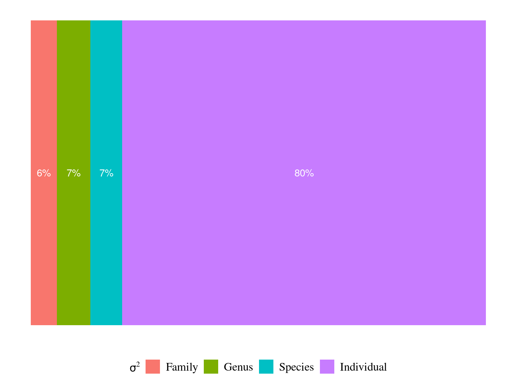

Chapter 6 Guyafor
In this chapter, I repeated the model fit for the whole Guyafor network.
6.1 Data
I used only recruited trees in the censuses with at least 4 measurements of diameter at breast height (DBH, cm). I used only species with at least 4 trees following previous requirements (Tab. 6.1 & Fig. 6.1).
| N | Median | Minimum | Maximum | |
|---|---|---|---|---|
| families | 50 | |||
| genera | 164 | |||
| species | 327 | |||
| individuals | 21 911 | |||
| observations | 269 525 | |||
| census | 12 | 5 | 30 | |
| year0 | 1 998 | 1 986 | 2 011 | |
| yearmax | 2 021 | 1 997 | 2 021 | |
| dbh0 | 11 | 5 | 15 | |
| dbhmax | 14 | 6 | 83 |
Figure 6.1: Tree diameter trajectories in reduced data. Color represent individuals.
6.2 Model
I used a Gompertz model (Hérault et al. 2011), were the diameter of individual \(i\) at year \(t\) is the sum of annual growth from \(t0\) to \(t\):
\[ DBH_{t,i,s} \sim \mathcal N (10 + Gmax_i \times \sum _{y=1|DBH_{t=0}} ^{y=t} exp(-\frac12.[\frac{log(\frac{DBH_{t,i}}{100.Dopt_i})}{Ks_i}]^2)), \sigma) \\| Dopt_i \sim \mathcal N(Dopt_s,\sigma_D), Ks_i \sim \mathcal N(Ks_s,\sigma_K) \]
The annual growth rate for individual \(i\) at year \(y\) with a diameter of \(DBH_{y,i}\) is defined following a Gompertz model (Gompertz 1825) already identified as the best model for growth-trajectories in Paracou (Hérault et al. 2011), where \(Gmax_i\) is the fixed maximum growth potential of every individual, \(Dopt_i\) is the optimal diameter at which the individual reaches its maximum growth potential, and \(Ks_i\) is the kurtosis defining the width of the bell-shaped growth-trajectory (see figure 1 in Hérault et al. 2011). \(Dopt_i\) and \(Ks_i\) are random effects centered on species parameters \(Dopt_s\) and \(Ks_s\) with associated variances \(\sigma_D\) and \(\sigma_K\).
6.3 Fit
6.4 Evolutionary analyses


Figure 6.2: Distribution of species growth potential (Gmax, cm/yr) in the phylogeny.
| parameter | Cmean | I | K | K.star | Lambda |
|---|---|---|---|---|---|
| gmax | NA (p=0.001) | NA (p=0.001) | NA (p=0.001) | NA (p=0.001) | 0.9999 (p=NA) |
| loggmax | NA (p=0.001) | NA (p=0.001) | NA (p=0.001) | NA (p=0.001) | 0.9999 (p=NA) |
6.5 Functional analyses

| gmax | |||
|---|---|---|---|
| Predictors | Estimates | CI | p |
| (Intercept) | 0.00 | -0.10 – 0.11 | 0.941 |
| leaf area | 0.11 | -0.03 – 0.24 | 0.115 |
| chlorophyll content | 0.20 | 0.08 – 0.31 | 0.001 |
| leaf thoughness | -0.13 | -0.28 – 0.03 | 0.108 |
| leaf nitrogen content | 0.16 | 0.04 – 0.29 | 0.009 |
| sapwood specific gravity | -0.25 | -0.37 – -0.13 | <0.001 |
| Observations | 281 | ||
| R2 / R2 adjusted | 0.185 / 0.170 | ||
References
Gompertz, B. (1825). On the nature of the function expressive of the law of humanmortality, and on a newmode of determining the value of life contingencies. Philosophical Transactions of the Royal Society of London, 115, 513–583. Retrieved from https://www.tandfonline.com/doi/full/10.1080/14786445908642737
Hérault, B., Bachelot, B., Poorter, L., Rossi, V., Bongers, F., Chave, J., Paine, C.E.T., Wagner, F. & Baraloto, C. (2011). Functional traits shape ontogenetic growth trajectories of rain forest tree species. Journal of Ecology, 99, 1431–1440.